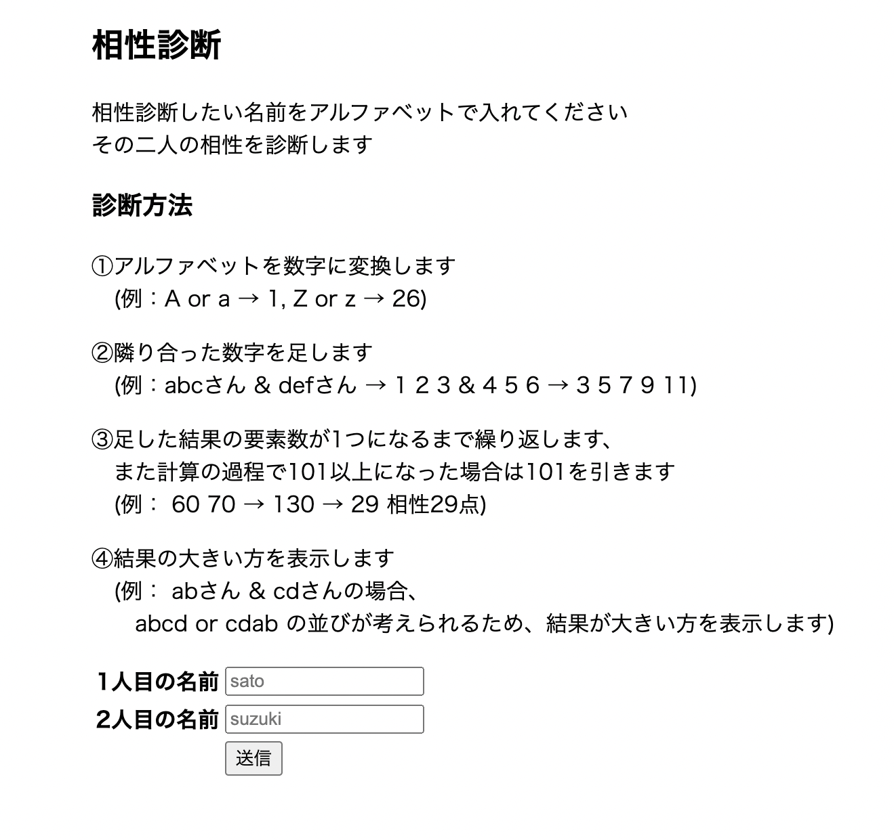
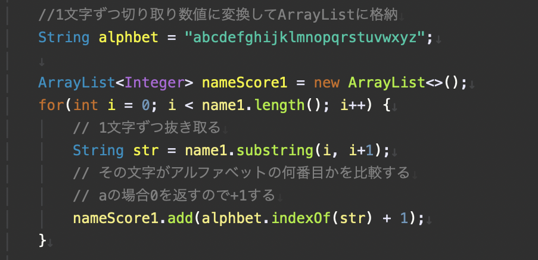
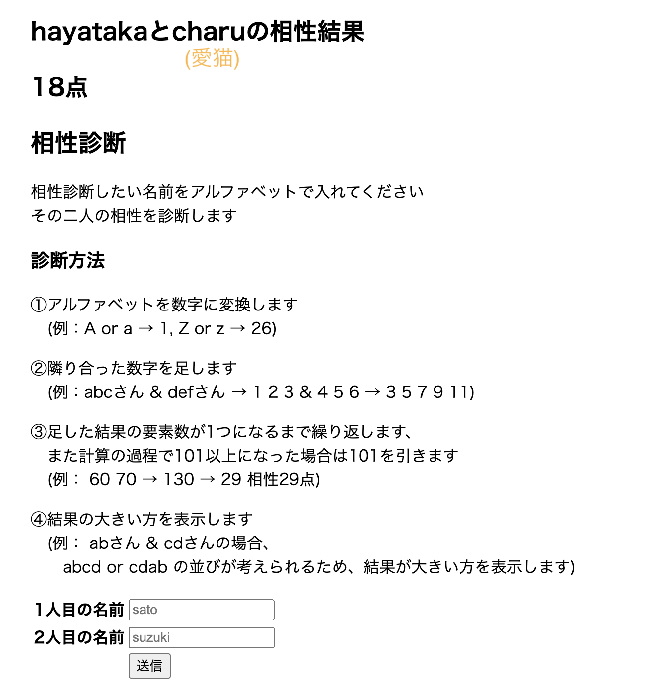

相性診断
【内容】
機能については下記の添付どおりになり、
2人の名前を入力することで相性を数値にして表示します(高い点数の方を)

【構成】
入力された名前をすべて小文字に変換(大文字で齟齬が生じないよう)
↓
数値に変換するために1文字ずつに分割
↓
アルファベット表を文字列として変数に代入し、該当アルファベットが何番目に来るかを
indexOfメソッドを用いて算出
【工夫や学び】
当初はaであれば1、bであれば2とその数の分だけif文を記述しようとして冗長と感じ、
短く書く方法を考えた際にindexOfメソッドを用いる方法を思いつきました。

